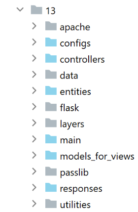
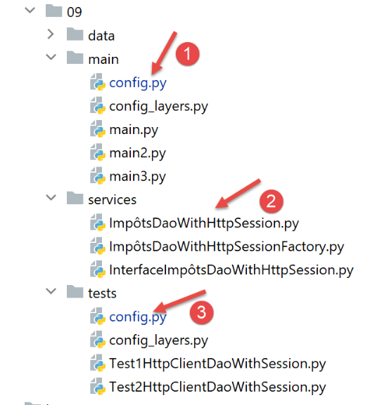

38. Exercice d’application : version 18
38.1. Implémentation

Le dossier [impots/http-servers/13] est obtenu initialement par recopie du dossier [impots/http-servers/12] puis modifié partiellement.
Nous commençons par ajouter un nouveau paramètre dans le fichier [configs/parameters] :
- …
- # token csrf
- "with_csrftoken": False,
- # bases gérées MySQL (mysql), PostgreSQL (pgres)
- "databases": ["mysql", "pgres"],
- # préfixe des URL de l'application
- # mettre la chaîne vide si on ne veut pas de préfixe ou /préfixe sinon
- "prefix_url": "/do",
- # url racine du serveur Apache - mettre la chaîne vide pour une exécution en-dehors d'Apache
- "application_root": "/impots"
- …
Ligne 10, le paramètre [application_root] représentera l’alias WSGI du serveur virtuel Apache.
Avec ce paramètre, nous pouvons corriger l’instruction de [responses/HtmlResponse] qui avait provoqué l’erreur :

- …
- # maintenant il faut générer l'URL de redirection sans oublier le jeton CSRF s'il est demandé
- if config['parameters']['with_csrftoken']:
- csrf_token = f"/{generate_csrf()}"
- else:
- csrf_token = ""
- # réponse de redirection
- return redirect(f"{config['parameters']['application_root']}{config['parameters']['prefix_url']}{ads['to']}{csrf_token}")
-
, status.HTTP_302_FOUND
-
ligne 9 : nous avons ajouté la racine de l’application au début de l’URL cible de la redirection ;
Il nous faut également corriger tous les fragments pour que les URL qu’ils contiennent commencent par la racine de l’application (ou alias WSGI) :

Le fragment [v-authentification]
- <!-- formulaire HTML - on poste ses valeurs avec l'action [authentifier-utilisateur] -->
- <form method="post" action="{{modèle.application_root}}{{modèle.prefix_url}}/authentifier-utilisateur{{modèle.csrf_token}}"
- >
- <!-- titre -->
- <div class="alert alert-primary" role="alert">
- <h4>Veuillez vous authentifier</h4>
- </div>
- …
- </form>
Le fragment [v-calcul-impot]
- <!-- formulaire HTML posté -->
- <form method="post" action="{{modèle.application_root}}{{modèle.prefix_url}}/calculer-impot{{modèle.csrf_token}}">
- <!-- message sur 12 colonnes sur fond bleu -->
- …
- </form>
Le fragment [v-liste-simulations]
- …
- {% if modèle.simulations is defined and modèle.simulations|length!=0 %}
- …
- <!-- tableau des simulations -->
- <table class="table table-sm table-hover table-striped">
- …
- <tr>
- <th scope="row">{{simulation.id}}</th>
- <td>{{simulation.marié}}</td>
- <td>{{simulation.enfants}}</td>
- <td>{{simulation.salaire}}</td>
- <td>{{simulation.impôt}}</td>
- <td>{{simulation.surcôte}}</td>
- <td>{{simulation.décôte}}</td>
- <td>{{simulation.réduction}}</td>
- <td>{{simulation.taux}}</td>
- <td><a href="{{modèle.application_root}}{{modèle.prefix_url}}/supprimer-simulation/{{simulation.id}}{{modèle.csrf_token}}">Supprimer</a></td>
- </tr>
- {% endfor %}
- </tr>
- </tbody>
- </table>
- {% endif %}
Le fragment [v-menu]
- <!-- menu Bootstrap -->
- <nav class="nav flex-column">
- <!-- affichage d'une liste de liens HTML -->
- {% for optionMenu in modèle.optionsMenu %}
- <a class="nav-link" href="{{modèle.application_root}}{{modèle.prefix_url}}{{optionMenu.url}}{{modèle.csrf_token}}">{{optionMenu.text}}</a>
- {% endfor %}
- </nav>
Les fragments ci-dessus utilisent tous le modèle [modèle.application_root]. Pour l’instant la clé [application_root] n’existe pas dans les modèles générés par les classes de modèles.

La classe [AbstractBaseModelForView] qui est la classe parent de toutes les classes générant un modèle devient la suivante :
- from abc import abstractmethod
- from flask import Request
- from flask_wtf.csrf import generate_csrf
- from werkzeug.local import LocalProxy
- from InterfaceModelForView import InterfaceModelForView
- class AbstractBaseModelForView(InterfaceModelForView):
- @abstractmethod
- def get_model_for_view(self, request: Request, session: LocalProxy, config: dict, résultat: dict) -> dict:
- pass
- def update_model(self, modèle: dict, config: dict):
- # calcul du jeton CSRF
- if config['parameters']['with_csrftoken']:
- csrf_token = f"/{generate_csrf()}"
- else:
- csrf_token = ""
- # mise à jour du modèle passé en paramètre
- modèle.update({
- # jeton csrf
- 'csrf_token': csrf_token,
- # prefix_url
- 'prefix_url': config["parameters"]["prefix_url"],
- # application_root
- 'application_root': config["parameters"]["application_root"],
-
})
-
ligne 15 : la méthode [update_model] a pour rôle de mettre dans le modèle des vues :
-
ligne 24 : le jeton CSRF ;
- ligne 26 : le préfixe des URL ;
- ligne 28 : la racine de l’application ou alias WSGI ;
Les quatre classes filles font appel à la classe parent avec le code suivant :
- …
- # actions possibles à partir de la vue
- modèle['actions_possibles'] = ["afficher-vue-authentification", "authentifier-utilisateur"]
- # finition du modèle par la classe parent
- super().update_model(modèle, config)
- # on rend le modèle
-
return modèle
-
ligne 6 : chaque classe fille appelle sa classe parent pour mettre à jour le modèle qu’elle a créé ;
La version 18 est prête. Nous reprenons les deux serveurs virtuels d’Apache de la version 17 et nous les modifions :

Les deux fichiers [flask-impots-withXX.conf] ne sont modifiés qu’en un seul point :
- # dossier du script .wsgi
- define ROOT "C:/Data/st-2020/dev/python/cours-2020/python3-flask-2020/impots/http-servers/13/apache"
- # nom du site web configuré par ce fichier
- # ici il s'appellera flask-impots-withmysql
- # les URL seront du type http(s)://flask-impots-withmysql/chemin
- define SITE "flask-impots-withmysql"
- # mettre l'adresse IP 127.0.0.1 pour site SITE dans c:/windows/system32/drivers/etc/hosts
- # mettre ici les chemins des bibliothèques Python à utiliser - les séparer par des virgules
- # ici les bibliothèques d'un environnement virtuel Python
- WSGIPythonPath "C:/Data/st-2020/dev/python/cours-2020/python3-flask-2020/venv/lib/site-packages"
- # Python Home - nécessaire uniquement s'il y a plusieurs versions de Python installées
- # WSGIPythonHome "C:/Program Files/Python38"
- # URL HTTP
- <VirtualHost *:80>
- # avec l'alias / les URL auront la forme /{prefixe_url}/action/...
- # avec l'alias /impots les URL auront la forme /impots/{prefixe_url}/action/...
- # où [prefixe_url] est défini dans parameters.py
- WSGIScriptAlias /impots "\${ROOT}/main_withmysql.wsgi"
- …
- </VirtualHost>
- # URL sécurisées avec HTTPS
- <VirtualHost *:443>
- # avec l'alias / les URL auront la forme /{prefixe_url}/action/...
- # avec l'alias /impots les URL auront la forme /impots/{prefixe_url}/action/...
- # où [prefixe_url] est défini dans parameters.py
- WSGIScriptAlias /impots "\${ROOT}/main_withmysql.wsgi"
- ..
-
</VirtualHost>
-
ligne 12, on utilise maintenant le dossier [impots/http-servers/13/apache].
Nous sommes prêts pour les tests de la version 18 portée sur Apache. La configuration est la suivante :
- l’alias WSGI est /impots dans les deux fichiers de configuration des serveurs virtuels ;
-
dans le fichier de paramétrage [configs/parameters], les paramètres sont les suivants :
-
# token csrf
- "with_csrftoken": False,
- # préfixe des URL de l'application
- # mettre la chaîne vide si on ne veut pas de préfixe ou /préfixe sinon
- "prefix_url": "/do",
- # url racine du serveur Apache - mettre la chaîne vide pour une exécution en-dehors d'Apache
- "application_root": "/impots"
On lance le serveur Apache ainsi que les deux SGBD. On demande l’URL [https://flask-impots-withmysql/impots/do]. La réponse du serveur est la suivante :

On obtient bien la vue d’authentification qu’on n’avait pu obtenir dans la version précédente. Le reste de l’application fonctionne normalement.
Maintenant on teste l’autre serveur virtuel. On demande l’URL [https://flask-impots-withpgres/impots/do]. La réponse du serveur est la suivante :

Les notions d’alias WSGI et de préfixe d’URL jouent le même rôle. L’une de ces deux notions est redondante. Ainsi pour préfixer les URL du serveur Apache avec la chaîne [/impots/do], on peut s’y prendre de trois manières :
1 – [WGSIAlias /impots] et [prefix_url=’/do’] ;
2 - [WGSIAlias /] et [prefix_url=’/impots/do’] ;
3 - [WGSIAlias /impots/do] et [prefix_url=’’] ;
38.2. Tests console
On utilise de nouveau les tests console du client [http-clients/09] :

- l’URL du serveur doit être modifiée dans les configurations [1] et [3] ;
- il faut apporter une modification à la couche [dao] pour qu’elle supporte le protocole HTTPS du serveur Apache ;
Dans les fichiers [config], l’URL du serveur devient la suivante :
- "server": {
- # "urlServer": "http://127.0.0.1:5000",
- # "urlServer": "http://127.0.0.1:5000/do",
- "urlServer": "https://flask-impots-withmysql/impots/do",
- "user": {
- "login": "admin",
- "password": "admin"
- },
- "url_services": {
- …
- }
- },
- # mode debug
- "debug": True,
- # csrf_token
-
"with_csrftoken": False,
-
ligne 4 : la nouvelle URL du serveur. Pour la 1ère fois dans ce document, le client utilise le protocole HTTPS ;
La classe [ImpôtsDaoWihHttpSession] de la couche [dao] évolue de la façon suivante :
- …
- # étape request / response
- def get_response(self, method: str, url_service: str, data_value: dict = None, json_value=None):
- # [method] : méthode HTTP GET ou POST
- # [url_service] : URL de service
- # [data] : paramètres du POST en x-www-form-urlencoded
- # [json] : paramètres du POST en json
- # [cookies]: cookies à inclure dans la requête
- # on doit avoir une session XML ou JSON, sinon on ne pourra pas gérer la réponse
- if self.__session_type not in ['json', 'xml']:
- raise ImpôtsError(73, "il n'y a pas de session valide en cours")
- # on ajoute le jeton CSRF à l'URL de service
- if self.__csrf_token:
- url_service = f"{url_service}/{self.__csrf_token}"
- # exécution de la requête
- response = requests.request(method,
- url_service,
- data=data_value,
- json=json_value,
- cookies=self.__cookies,
- allow_redirects=True,
- # pour le protocole https
- verify=False)
- # mode debug ?
- if self.__debug:
- # logueur
- if not self.__logger:
- self.__logger = self.__config['logger']
- # on logue
- self.__logger.write(f"{response.text}\n")
- …
- # on rend le résultat
-
return résultat['réponse']
-
ligne 26, on ajoute le paramètre [verify=False] à cause du protocole HTTPS utilisé par le serveur Apache. Le module [requests] (ligne 19) sait gérer nativement le protocole HTTPS. Par défaut, il vérifie la validité du certificat de sécurité que lui envoie le serveur HTTPS et lance une exception si le certificat reçu n’est pas valide. C’est le cas ici où le serveur Apache de Laragon envoie un certificat auto-signé. Pour éviter l’exception, on utilise le paramètre [verify=False] pour dire au module [requests] de ne pas lancer d’exception. [requests] se contente alors d’afficher un avertissement (warning) sur la console.
Ces modifications faites, tous les tests console doivent fonctionner.